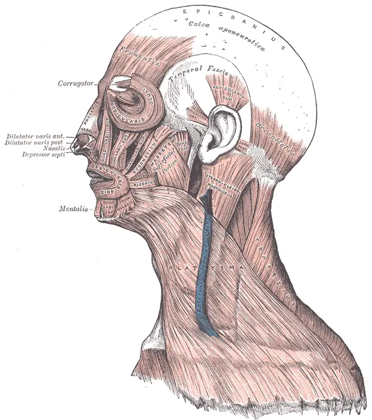

DX.3 — Myokymie palpébrale
La myokymie palpébrale est un frémissement bénin d’une seule paupière, qui cède le plus souvent quand on corrige fatigue, stimulants et sécheresseS3S5. Le danger tient à la confusion : une contraction qui ferme l’œil, gagne la joue ou s’accompagne d’un déficit n’est plus une myokymie et impose un autre bilanS3S7S12.
1. Définition
Le Moorfields Eye Hospital définit la myokymie palpébrale comme des contractions incontrôlables des muscles de la paupière, perçues comme un frémissement, un tremblement ou un spasmeS3. Un éditorial de la revue Movement Disorders Clinical Practice précise qu’il s’agit de contractions continues, multicentriques et de faible amplitude de l’orbiculaire de l’œil, surtout à la paupière inférieureS5. Elle la décrit comme un phénomène bénin, habituellement unilatéral et spontanément résolutif, qui survient chez des personnes par ailleurs en bonne santéS5.
2. Épidémiologie (Suisse, puis Europe)
Le Moorfields indique que la myokymie est très fréquente et peut toucher n’importe qui, sans en donner la prévalenceS3. Les données disponibles viennent de séries de patients qui consultent, et non d’enquêtes en population. Ces séries décrivent le terrain exposé, l’évolution spontanée et la part des causes graves, qui reste exceptionnelle.
Qui consulte pour une myokymie : données chiffrées
| Donnée | Population | Année | Source |
|---|---|---|---|
| Temps d’écran quotidien de 6,88 ± 2,01 heures chez les patients, contre 4,84 ± 1,74 heures chez les témoins | 103 patients gênés depuis plus de deux semaines et 103 témoins (Kocaeli, Turquie) | 2023–2024 | S10 |
| Corrélation positive forte (r = 0,670) entre la durée du frémissement et le temps passé devant les écrans | Même série | 2024 | S10 |
| Myokymie chez 8 patients sur 140 (5,7 %) après l’introduction du topiramate | Migraineux d’une consultation de céphalées (Espagne) | 2008–2012 | S8 |
| Myokymie apparue pendant ou juste après la maladie chez 15 patients | Patients guéris de la COVID-19 (Pakistan) | 2022 | S11 |
Ces chiffres décrivent des malades qui consultent ; ils ne mesurent donc pas la fréquence du symptôme dans la population, où la plupart des épisodes passent sans consultationS3S10.
Évolution spontanée
Une revue décrit une résolution en quelques heures à quelques jours chez la plupart des personnes, alors que les formes chroniques durent plusieurs semaines à plusieurs moisS18. Dans une série de 15 formes chroniques isolées, la gêne avait commencé par des épisodes hebdomadaires, puis quotidiens, sur plusieurs moisS9. La durée moyenne des symptômes atteignait 91 mois à la première consultation, avec des extrêmes de 2,5 mois à 20 ansS9.
Après la COVID-19, la myokymie a disparu en trois mois chez 13 patients sur 15, avec une médiane de guérison de 42 jours (intervalle interquartile 31 à 60)S11. Dans cette série, chaque année d’âge supplémentaire retardait la guérison de 2,64 jours, et chaque jour d’hospitalisation de 6,19 joursS11.
Part des causes graves
Dans la série chronique de Banik et Miller, aucun des 15 patients n’a présenté la myokymie comme premier signe d’une maladie neurologiqueS9. Un seul patient a évolué vers un spasme hémifacial homolatéral, et les 13 imageries réalisées sont restées normalesS9.
Des cas isolés montrent cependant qu’une myokymie peut révéler une sclérose en plaques, une tumeur cérébrale ou un schwannome trigéminalS12S13S14. Chez une femme de 52 ans, la myokymie durait depuis six mois et s’accompagnait d’une ptôse ; l’IRM a montré une masse temporale de 20 × 25 × 20 mmS13. Chez un homme de 57 ans, un schwannome du cavum de Meckel ne donnait qu’une myokymie palpébraleS14. Ces cas avaient presque tous un signe de plus : extension faciale, ptôse, persistance de plusieurs mois ou déficit associéS12S13S14. Aucune mortalité n’est rapportée pour la myokymie isolée elle-même ; le pronostic dépend de la cause rare qu’elle annonce parfoisS9S12.
3. Physiopathologie
La base à connaître tient en deux muscles antagonistes : l’orbiculaire de l’œil ferme la paupière sous la commande du nerf facial, et le releveur l’ouvre sous celle du nerf oculomoteurS2. L’innervation de l’orbiculaire est très diffuse, ce qui permettrait à de petits segments du muscle de se contracter séparémentS16. La myokymie naît dans un tel segment ; on la croit d’origine nerveuse périphérique, ce qui explique un frémissement localisé, sans fermeture ni faiblesseS13S5.
La chaîne causale comprend un terrain favorisant, une décharge spontanée des fibres motrices, puis une ondulation visible sous la peauS3S4S5. Le tableau de corrélation relie chaque perturbation à l’examen qui la montre et au geste qui la corrigeS3S7S14.
Base à connaître : orbiculaire, releveur et nerf facial
La portion palpébrale de l’orbiculaire assure la fermeture douce, le clignement réflexe et la pompe lacrymale, qui pousse les larmes vers le sac lacrymalS2. La portion orbitaire, plus périphérique, permet la fermeture forcée des paupièresS2. Lors d’un clignement normal, le releveur se relâche d’abord, puis l’orbiculaire se contracteS2.
Le nerf facial porte les fibres motrices de l’orbiculaire et l’innervation parasympathique de la glande lacrymale ; sa branche zygomatique longe le rebord orbitaire temporalS2. Le releveur dépend au contraire du troisième nerf crânien, ce qui explique qu’une ptôse oriente vers un autre mécanisme que la myokymieS2S13. Une étude électromyographique a montré que l’activation de l’orbiculaire varie d’un segment à l’autre selon le geste palpébralS16.
Muscles de la face, vue latérale. Cette planche d’anatomie, tirée de l’anatomie de Gray, montre l’orbiculaire de l’œil et les muscles voisins innervés par le nerf facial

Le lecteur recherche d’abord seul, sur cette planche brute, l’anneau de l’orbiculaire autour de l’œil.
La copie annotée porte les quatre repères que la lecture guidée explique.
- La portion palpébrale de l’orbiculaire, sous la paupière inférieure, est le siège habituel de la myokymie.
- La portion orbitaire entoure l’orbite et permet la fermeture forcée, absente dans la myokymie.
- Le muscle grand zygomatique se contracte dans le spasme hémifacial, mais il reste immobile dans la myokymie.
- L’orbiculaire de la bouche devient actif quand le spasme hémifacial atteint la commissure labiale.
- Une ondulation qui reste sous la paupière suggère une myokymie, alors qu’un mouvement qui atteint la joue ou la bouche change le diagnostic.
Ce que la planche décide. Le médecin rassure si le mouvement reste dans l’anneau palpébral, et il demande une IRM si la contraction gagne la joue ou la bouche.

Le cliché montre pourquoi le siège compte. Un frémissement limité à l’anneau palpébral relève d’un segment de l’orbiculaire, alors qu’une contraction de la joue ou de la bouche mobilise d’autres muscles du nerf facialS7.
Chaîne causale en quatre temps
| Temps | Ce qui se passe | Traduction clinique | Source |
|---|---|---|---|
| Amorce | Fatigue, manque de sommeil, sécheresse oculaire, caféine, nicotine ou stress favorisent les épisodes | Le patient relie souvent le frémissement à une période chargée | S3 |
| Développement | Des fibres motrices d’un segment de l’orbiculaire déchargent spontanément, d’origine présumée périphérique | Ondulation fine et continue, surtout à la paupière inférieure | S5S13S16 |
| Installation | Les épisodes deviennent plus fréquents, parfois quotidiens | Gêne et inquiétude, sans fermeture de l’œil | S9 |
| Maintien ou fin | La correction des facteurs fait souvent cesser le frémissement ; une forme chronique peut durer des mois | Guérison spontanée ou forme chronique bénigne | S3S9S18 |
Ces associations orientent la revue des habitudes ; elles ne prouvent ni une maladie générale ni une carenceS4S10.
Corrélation : perturbation, exploration, thérapeutique
| Perturbation | Exploration qui la montre | Thérapeutique et mécanisme |
|---|---|---|
| Décharge segmentaire d’un territoire de l’orbiculaire | Inspection de la paupière au repos et pendant la conversation S5 | Réduction des facteurs favorisants ; repos et sommeil S3 |
| Sécheresse de la surface oculaire | Interrogatoire (brûlure, corps étranger) et examen de la surface S1 | Larmes artificielles et éviction des facteurs aggravants S1 |
| Effet d’un médicament (topiramate) | Chronologie d’introduction, arrêt puis réintroduction S8 | Décision avec le prescripteur, jamais d’arrêt autonome S4S8 |
| Compression ou lésion du nerf facial ou du tronc cérébral | Imagerie par résonance magnétique (IRM) de l’angle pontocérébelleux et du tronc S7S12 | Traitement de la cause ; toxine botulique en centre spécialisé S7S9 |
| Atteinte du nerf trijumeau | Réflexe de clignement évoqué par le trijumeau et IRM S14 | Décision chirurgicale selon la lésion S14 |
4. Démarche diagnostique
Le médecin écarte d’abord les diagnostics graves de la liste, puis il distingue la myokymie des mouvements fréquents qui lui ressemblentS1S6S7. Le tableau discriminant donne, pour chacun, l’élément qui tranche, le piège et la conduite. L’erreur classique du débutant consiste à rassurer devant un spasme hémifacial débutant, qui commence lui aussi à l’orbiculaire de l’œilS7.
Diagnostics discriminants : les graves d’abord
| Diagnostic | Élément qui tranche | Piège | Conduite si positif |
|---|---|---|---|
| Kératite aiguë 🚩 E1 | Œil rouge douloureux, photophobie, baisse visuelle S1 | Le clignement réflexe imite une contraction palpébrale S1 | Avis ophtalmologique en urgence S1 |
| Corps étranger ou abrasion 🚩 E2 | Traumatisme ou sensation de corps étranger S1 | Le frémissement réactionnel masque la lésion de surface | Examen ophtalmologique en urgence S1 |
| Dystonie médicamenteuse 🚩 E3 | Introduction récente d’un médicament et fermeture forcée | Le topiramate cause aussi une myokymie bénigne S8 | Voir DX.9 ; revue du traitement avec le prescripteur |
| Spasme hémifacial | Extension progressive à l’hémiface S7 | Il commence à l’orbiculaire de l’œil S7 | IRM et avis neurologique S7 |
| Blépharospasme essentiel | Fermetures bilatérales, synchrones et stéréotypées S6 | Le clignement accru fait partie du tableau S6 | Avis neurologique ; toxine botulique S6 |
| Tic moteur palpébral | Mouvement plus complexe, coordonné et volontairement suspendu S7 | Le patient le décrit aussi comme un tressautement | Voir DX.4 |
| Sécheresse oculaire | Brûlure, sensation de corps étranger, aggravation par les écrans S1 | Elle favorise la myokymie et coexiste avec elle S3 | Larmes artificielles S1 |
Erreur classique : rassurer un spasme hémifacial débutant
Le spasme hémifacial débute par des contractions de l’orbiculaire de l’œil, puis s’étend progressivement aux autres muscles de la même hémifaceS7. Au premier stade, la plainte semble donc une myokymie, et seul le suivi de l’extension permet de trancherS7.
Le raisonnement suit quatre étapes. D’abord, le mécanisme : une compression vasculaire du nerf facial à sa sortie du tronc cérébral provoque une transmission anormale entre fibres voisinesS7. Ensuite, le signe : la contraction ferme l’œil et gagne la joue ou la commissure labiale, alors que la myokymie ondule sans fermerS5S7. Puis, l’examen : l’IRM recherche la compression et une lésion de l’angle pontocérébelleuxS7. Enfin, la décision : la toxine botulique soulage 85 à 95 % des patients et se répète tous les 3 à 4 moisS7.
Le risque chiffré reste faible, car un seul patient sur 15 a évolué vers un spasme hémifacial dans la série chronique de Banik et MillerS9. Le débutant évite l’erreur en revoyant le patient si la gêne dure plus de deux semainesS4S9.
5. Anamnèse ciblée et drapeaux rouges
L’entretien caractérise le frémissement, puis cherche une gêne oculaire associée et des symptômes neurologiques, car chacun change la conduiteS1S3S4. Il recense ensuite les facteurs favorisants et les médicaments, puisqu’un traitement récent peut entretenir le mouvementS4S8. Les drapeaux rouges imposent chacun une action immédiate.
Le frémissement : caractérisation
| Caractère | Présentation typique | Pourquoi |
|---|---|---|
| Siège | Une seule paupière, surtout l’inférieure S5 | Un seul segment de l’orbiculaire décharge S5S16 |
| Type | Ondulation fine, multicentrique, de faible amplitude S5 | Peu d’unités motrices se contractent, d’où l’absence de fermeture S5 |
| Intensité | Gênante mais sans gêne visuelle | La fente palpébrale reste ouverte S5 |
| Horaire | Épisodes intermittents, parfois devenus quotidiens S9 | L’activité varie avec le terrain favorisant S3S9 |
| Déclenchants | Fatigue, caféine, stress, écrans S3S10 | Le Moorfields les cite comme déclencheurs habituels S3 ; la durée suit le temps d’écran S10 |
| Calmants | Repos, sommeil, réduction des stimulants S3 | La correction des facteurs fait souvent cesser les épisodes S3 |
| Signes associés | Aucun | Un signe associé oriente vers une autre cause S3S4 |
Le tableau devient atypique si la contraction ferme l’œil, touche les deux côtés, gagne la joue ou la lèvre, ou persiste sans interruptionS3S6S7.
Gêne oculaire associée
Le médecin demande s’il existe une douleur, une rougeur, une photophobie, une baisse de vision, une vision double ou des halosS1. Ces signes désignent une atteinte qui menace la vision et imposent un examen spécialisé en urgence, quel que soit le frémissementS1.
Une brûlure et une sensation de corps étranger qui s’aggravent avec les écrans, le chauffage ou la climatisation orientent vers une sécheresse oculaireS1. Le port de lentilles de contact augmente le risque infectieux et justifie un avis ophtalmologique urgent devant un œil rougeS1.
Symptômes neurologiques à rechercher
Le médecin interroge sur une extension du mouvement au sourcil, à la joue ou à la lèvre, car elle oriente vers une myokymie faciale d’origine centraleS12. Il recherche aussi une faiblesse ou une raideur de la zone touchée, et des mouvements à plusieurs endroits du corpsS4.
Il cherche ensuite une chute de la paupière, un trouble de la sensibilité du visage, une difficulté à avaler ou des troubles de l’équilibreS13S14S17. Ces signes figuraient dans les cas où la myokymie révélait une tumeur, un schwannome ou une sclérose en plaquesS12S13S14S17.
Facteurs favorisants et médicaments
L’entretien chiffre le sommeil, la caféine, la nicotine, l’alcool, le stress et le temps d’écran, car ces facteurs sont associés aux épisodesS3S4S10. Il recherche une infection récente par le SARS-CoV-2, après laquelle des myokymies ont été décritesS11.
Il date l’introduction de chaque médicament, surtout du topiramate, qui a provoqué une myokymie chez 5,7 % des migraineux d’une série espagnoleS8. Un cas a aussi relié la myokymie à la metformine, avec disparition à l’arrêt et récidive à la repriseS15. Le patient ne doit pas arrêter seul un médicament prescrit, même s’il le croit responsableS4.
Drapeaux rouges
| Drapeau rouge | Signification | Action immédiate |
|---|---|---|
| Douleur oculaire intense, photophobie, baisse de vision S1 | Atteinte de la surface ou de l’œil menaçant la vision S1 | Examen ophtalmologique en urgence S1 |
| Baisse de vision ou douleur oculaire dans le premier mois de topiramate S20 | Myopie aiguë avec glaucome secondaire par fermeture de l’angle S20 | Arrêt rapide du topiramate selon le médecin et baisse de la pression intraoculaire S20 |
| Extension au sourcil, à la joue ou à la lèvre S12 | Myokymie faciale ou spasme hémifacial S7S12 | Avis neurologique et IRM S7S12 |
| Ptôse, diplopie ou anisocorie nouvelle S1S13 | Atteinte du releveur, de l’oculomotricité ou lésion intracrânienne S13 | Examen spécialisé en urgence S1 |
| Faiblesse ou raideur de la zone touchée S4 | Atteinte motrice plutôt que frémissement bénin S4 | Évaluation médicale et neurologique S4 |
| Mouvement constant ou durant plus de deux semaines S3S4 | Forme chronique ou autre diagnostic S3S4 | Consultation médicale et réexamen S4 |
6. Examen physique ciblé, région par région
L’examen suit l’ordre où on le réalise devant un frémissement palpébral. Il commence par le visage, puis il étudie paupières, surface oculaire, vision, oculomotricité, nerfs crâniens et neurologie. Chez le patient typique, toutes ces étapes sont normales en dehors de l’ondulation, et c’est cette normalité qui fonde la réassuranceS3S5.
Visage au repos et en conversation
Le signe recherché est l’étendue du mouvement : la myokymie reste limitée à la paupière, alors que le spasme hémifacial gagne l’hémifaceS5S7. Le médecin observe le visage entier au repos, pendant la parole et pendant le clignementS6.
Une contraction qui soulève la commissure labiale ou plisse la joue signe une extension faciale et impose l’IRMS7S12. Des fermetures des deux yeux, synchrones et stéréotypées, orientent au contraire vers un blépharospasmeS6. Ces spasmes, associés à un geste antagoniste ou à un clignement accru, séparent le blépharospasme des autres fermetures avec une sensibilité de 93 % et une spécificité de 90 %S6.
Paupières
Le signe recherché est une ondulation fine et continue de la peau d’une paupière, surtout inférieure, qui ne ferme pas la fente palpébraleS5. Le médecin regarde la paupière de près, car l’amplitude du mouvement est faibleS5.
Il mesure ensuite la hauteur des fentes palpébrales : une ptôse supérieure associée à une remontée de la paupière inférieure a révélé une tumeur cérébraleS13. Si l’épisode ne survient pas pendant la consultation, la description du patient guide l’examen, et une nouvelle visite reste possible si la gêne persisteS4.
Surface oculaire et bords palpébraux
Le signe recherché est une rougeur, une sécrétion, une inflammation du bord libre ou une atteinte de la cornéeS1. Le médecin contrôle la conjonctive, les bords libres et la cornée, puis note toute rougeur ou sécrétionS1.
Une sécheresse se traduit par une rougeur modérée, souvent bilatérale, avec un diagnostic qui repose surtout sur l’anamnèse et la réponse aux larmes artificiellesS1. Un infiltrat cornéen ou un hypopion impose au contraire une consultation ophtalmologique urgenteS1.
Acuité visuelle et pupilles
Le signe recherché est une baisse d’acuité, une anisocorie nouvelle ou des halos, qui sont des drapeaux rouges de l’œilS1. Le médecin mesure l’acuité de chaque œil avec la correction habituelle, puis compare les pupilles à la lumière et dans la pénombre.
Chez un patient sous topiramate, une baisse de vision avec mydriase et œil rouge évoque une fermeture de l’angle, qui survient typiquement dans le premier mois de traitementS20. Cette association transforme un frémissement anodin en urgence ophtalmologiqueS1S20.
Oculomotricité
Le signe recherché est une diplopie ou une limitation d’un mouvement oculaire, qui n’appartient pas à la myokymieS1S5. Le médecin fait suivre une cible du regard dans toutes les directions et demande si l’image se dédouble.
Une diplopie nouvelle figure parmi les signes qui imposent un examen spécialisé en urgenceS1. Une atteinte associée du troisième nerf expliquerait aussi une ptôse, puisque ce nerf commande le releveurS2.
Nerfs facial et trijumeau
Le signe recherché est une faiblesse faciale ou un trouble de la sensibilité du visageS4S14. Le médecin fait fermer les yeux avec force, plisser le front, montrer les dents et gonfler les joues, puis compare les deux côtés.
Il teste ensuite la sensibilité des trois territoires du trijumeau et le réflexe cornéen, car un schwannome trigéminal s’est révélé par une myokymie isoléeS14. Une fermeture incomplète de l’œil expose la cornée à une kératite d’exposition et oriente vers une atteinte du nerf facialS2.
Examen neurologique ciblé
Le signe recherché est un déficit focal qui ferait d’un frémissement le symptôme d’une lésion centraleS12S17. Le médecin contrôle la force des membres, les réflexes, la coordination, la déglutition et la marche.
Une sclérose en plaques s’est révélée par une myokymie de la paupière inférieure, qui a gagné en deux semaines le sourcil et la lèvre supérieureS12. Un glioblastome s’est révélé par un spasme hémifacial léger avec myokymie, chez une patiente qui avait aussi des épisodes de dysphagieS17.
7. Approche syndromique
Trois syndromes se discutent devant un frémissement palpébral, et chacun réunit des signes fonctionnels et physiques distinctsS3S5S12. Le tableau syndromique les sépare ; chaque signe y renvoie au geste de recherche du point 6.
Syndromes : 7.1 à 7.3
| Syndrome | Signes fonctionnels | Signes physiques | Mécanisme |
|---|---|---|---|
| 7.1 Myokymie palpébrale isolée | Frémissement intermittent d’une paupière, sans gêne visuelle S3 | Ondulation fine de l’orbiculaire, examen normal par ailleurs S5 | Décharge d’un segment de l’orbiculaire, d’origine présumée périphérique S13S16 |
| 7.2 Myokymie faciale étendue | Frémissement qui gagne sourcil, joue ou lèvre S12 | Ondulation de plusieurs muscles d’une hémiface, parfois déficit associé S12S17 | Lésion du tronc cérébral : sclérose en plaques, tumeur S5S12 |
| 7.3 Syndrome de surface oculaire | Brûlure, corps étranger, larmoiement S1 | Rougeur modérée, souvent bilatérale S1 | Insuffisance lacrymale quantitative ou qualitative S1 |
Le syndrome 7.3 coexiste souvent avec le syndrome 7.1, car la sécheresse figure parmi les facteurs favorisants de la myokymieS1S3.
8. Diagnostic positif et critères
Aucune société savante ne publie de critères diagnostiques formels de la myokymie palpébrale ; le diagnostic reste cliniqueS3S5. Les éléments qui suffisent sont un frémissement unilatéral limité à une paupière, sans fermeture, avec un examen par ailleurs normalS5. La durée ne prouve pas la bénignité, mais elle fixe le moment de la réévaluationS3S4.
Ce qui suffit et ce qui ne suffit pas
| Élément | Suffit au diagnostic ? | Raison |
|---|---|---|
| Frémissement fin d’une paupière, surtout inférieure, observé à l’examen | Oui, si l’examen est normal | C’est la description de la myokymie S5 |
| Contexte de fatigue, de caféine ou de stress | Non, seul | Ces facteurs sont des associations, pas une preuve S3S4 |
| Amélioration après repos | Non, seule | Elle soutient la conduite conservatrice sans exclure une autre cause S3 |
| Fermeture forcée des deux yeux | Exclut la myokymie | Elle oriente vers un blépharospasme S6 |
| Extension à l’hémiface | Exclut la myokymie isolée | Elle oriente vers un spasme hémifacial ou une myokymie faciale S7S12 |
| Ptôse ou déficit associé | Exclut la forme bénigne isolée | Ces signes ont révélé des lésions intracrâniennes S13S14 |
Il n’existe ni score ni stade pour cette affection ; la sévérité se décrit par la fréquence des épisodes et la gêne ressentieS9.
Seuils de durée
Le NHS conseille de consulter un médecin si le frémissement dure plus de deux semaines ou touche plusieurs endroitsS4. Le Moorfields conseille de consulter si le frémissement ne s’arrête pas, devient constant, s’étend au visage ou s’accompagne d’une douleurS3.
Ces seuils ne s’appliquent pas aux drapeaux rouges, qui imposent un avis dès le premier jourS1. Une forme qui dure plus de deux semaines reste souvent bénigne, comme l’ont montré les formes chroniques de plusieurs années sans maladie neurologiqueS9.
9. Examens complémentaires
9.a L’examen de référence est clinique : l’observation du frémissement et un examen normal suffisent dans une forme typiqueS3S5.
9.b En première intention, aucun examen n’est nécessaire, et un ionogramme n’apporte rien au patient typiqueS10. Un examen ophtalmologique s’impose seulement devant une gêne de surface, une douleur ou une baisse de visionS1.
9.c Chez l’enfant, la femme enceinte ou le patient qui ne supporte pas l’IRM, la conduite reste clinique, puisque la forme typique ne demande aucun examenS3S5.
9.d En deuxième intention, l’IRM cérébrale, l’exploration électrophysiologique et un dosage de la vitamine B12 sous metformine répondent à des situations précisesS7S14S15.
Ionogramme et magnésium
Une étude cas-témoins de 103 patients ne montre aucune différence de calcium, de sodium, de potassium ni de magnésium sanguins entre patients et témoinsS10. Le dosage n’a donc pas d’indication systématique devant un frémissement isoléS10.
| Résultat | Signification | Conduite |
|---|---|---|
| Valeurs normales | Attendu ; ne change rien S10 | Pas de supplémentation empirique S4S10 |
| Anomalie découverte | Probablement sans lien avec la myokymie S10 | Bilan de l’anomalie pour elle-même |
Le piège consiste à prescrire du magnésium sur un symptôme isolé ; le NHS ne recommande que des mesures d’hygiène de vieS4.
Examen ophtalmologique
L’ophtalmologue examine la surface oculaire, les bords palpébraux et la cornée à la lampe à fente, et mesure la pression intraoculaire si le tableau l’exigeS1S20. L’indication urgente repose sur la douleur intense, la photophobie, la baisse de vision, le port de lentilles ou l’absence de réponse après 48 heures de traitementS1.
| Résultat | Signification | Conduite |
|---|---|---|
| Surface normale | Myokymie isolée plausible S5 | Réassurance et mesures d’hygiène S3 |
| Kératite ponctuée, film lacrymal instable | Sécheresse oculaire S1 | Larmes artificielles ; voir DX.1 S1 |
| Infiltrat cornéen ou hypopion | Kératite infectieuse S1 | Prise en charge urgente ; voir DX.6 S1 |
| Chambre antérieure étroite et pression élevée sous topiramate | Glaucome secondaire par fermeture de l’angle S20 | Arrêt du topiramate et baisse de la pression S20 |
IRM cérébrale
L’IRM est indiquée si le mouvement s’étend à l’hémiface, si un déficit neurologique ou une ptôse s’y associent, ou si la gêne persiste et s’aggraveS7S12S13. Elle examine l’angle pontocérébelleux et le tronc cérébral ; des séquences pondérées en T2 à haute résolution montrent une compression vasculaire du nerf facialS7.
| Résultat | Signification | Conduite |
|---|---|---|
| Normale | Cas habituel, y compris dans les formes chroniques S9 | Surveillance ; toxine botulique si gêne invalidante S9 |
| Lésions démyélinisantes | Sclérose en plaques S12 | Avis neurologique |
| Masse du lobe temporal ou de la région frontale | Tumeur cérébrale S13S17 | Avis neurochirurgical S17 |
| Masse du cavum de Meckel | Schwannome trigéminal S14 | Décision chirurgicale S14 |
| Boucle vasculaire au contact du nerf facial | Spasme hémifacial S7 | Toxine botulique ou décompression microvasculaire S7 |
Le piège consiste à demander une IRM pour une myokymie typique de quelques jours, car l’examen n’est pas déduit du seul mot de myokymieS3S9.
Exploration électrophysiologique
Le réflexe de clignement consiste à stimuler le nerf supraorbitaire et à enregistrer la réponse de l’orbiculaire par des électrodes de surfaceS6. Dans une myokymie persistante, le réflexe évoqué par le trijumeau a confirmé la myokymie et guidé la décision chirurgicale d’un schwannomeS14.
Cet examen relève d’un laboratoire de neurophysiologie et n’a pas de place dans la forme typiqueS14. Le piège tient au releveur, qui n’est accessible qu’à l’aiguille, alors que l’orbiculaire s’enregistre facilement en surfaceS6.
Vitamine B12 sous metformine
Un cas publié a relié une myokymie unilatérale à la metformine chez une femme de 39 ans, avec une vitamine B12 à la limite inférieureS15. Le frémissement a cédé à l’arrêt de la metformine et récidivé à sa reprise ; la méthylcobalamine orale n’avait pas suffiS15.
Ce cas isolé ne justifie pas un dosage chez tout patient, mais il rappelle de revoir les traitements en cours devant une forme persistanteS15S4. La décision d’arrêter la metformine appartient au prescripteurS4.
10. Arbre décisionnel
L’arbre part d’un patient qui décrit un tressautement de la paupière ; il exclut les urgences avant de retenir la myokymieS1S3S4.
- Si l’œil est rouge et douloureux, avec photophobie ou baisse de vision, le médecin adresse le patient en urgence à l’ophtalmologue ; voir DX.5 et DX.6S1.
- Si le patient prend du topiramate depuis moins d’un mois et voit flou, le médecin suspecte une fermeture de l’angle et organise un avis ophtalmologique immédiatS20.
- Si un médicament récent s’accompagne d’une fermeture forcée des paupières, le médecin évoque une dystonie médicamenteuse ; voir DX.9.
- Si une ptôse, une diplopie, un déficit facial ou un déficit des membres s’associent, le médecin demande un avis neurologique et une IRMS1S13S17.
- Si le mouvement gagne la joue ou la lèvre d’un seul côté, le médecin évoque un spasme hémifacial ou une myokymie faciale et prescrit une IRM ; voir DX.7S7S12.
- Si les deux yeux se ferment de façon synchrone et stéréotypée, le médecin évoque un blépharospasme ; voir DX.8S6.
- Si le frémissement reste limité à une paupière sans autre signe, le médecin retient une myokymie et corrige sommeil, stimulants, écrans et sécheresseS3S10.
- Si la gêne persiste plus de deux semaines, le médecin réexamine le patient ; si elle reste isolée, il rassure et propose un avis spécialisé seulement en cas de gêne invalidanteS4S9.
11. Prise en charge selon les recommandations suisses
11.A Le but est double : faire cesser ou rendre tolérable le frémissement, et ne pas manquer l’une des rares causes gravesS3S12. Un critère chiffré guide la réévaluation : un frémissement qui dure plus de deux semaines justifie une nouvelle consultationS4.
11.B La myokymie isolée ne menace pas ; les situations qui la miment ou la compliquent relèvent d’une conduite chronologique d’urgenceS1S20. L’ordre du traitement commence par l’hygiène de vie, traite une sécheresse associée et revoit les médicaments avec le prescripteurS1S3S4. La pharmacologie ne comporte aucun médicament de routine ; elle concerne la toxine botulique en centre spécialisé et la fiche du topiramate, cause à reconnaîtreS9S8.
Les situations spéciales modifient surtout le choix d’un traitement spécialisé, car les mesures d’hygiène conviennent à tousS19S3.
11.C La surveillance porte sur la durée, l’extension et les signes associésS3S4.
11.D Le pronostic est excellent, et des critères énumérés permettent de clore le suiviS9S18.
Urgence — conduite chronologique
| Moment | Situation | Geste | Délai maximal |
|---|---|---|---|
| Premières minutes | Œil rouge douloureux, photophobie, baisse de vision | Mesurer l’acuité, chercher un corps étranger, retirer les lentilles et les conserver dans leur étui S1 | Avis ophtalmologique en urgence S1 |
| Premières minutes | Topiramate récent, douleur ou baisse de vision | Suspecter une fermeture de l’angle et adresser à l’ophtalmologue S20 | Arrêt du topiramate aussi rapidement que possible selon le médecin S20 |
| Premières heures | Déficit neurologique focal, ptôse ou diplopie nouvelle | Examen neurologique, puis imagerie selon l’avis spécialisé S1S13 | Examen spécialisé en urgence S1 |
| 48 heures | Œil rouge traité sans amélioration | Avis ophtalmologique S1 | Au-delà de 48 heures sans réponse S1 |
| Deux semaines | Frémissement isolé qui persiste | Nouvelle consultation et réexamen complet S4 | Après deux semaines S4 |
Le piège qui fait perdre du temps consiste à attendre le délai de deux semaines devant une douleur ou une baisse de vision ; les drapeaux rouges priment dès le premier jourS1S4.
Ordre du traitement et mesures non pharmacologiques
D’abord, le patient dort suffisamment, se repose et limite caféine, alcool et nicotine, car ces mesures font souvent cesser les épisodesS3S4. Ensuite, il réduit le temps d’écran, puisque la durée du frémissement suit le temps passé devant les écransS10. Il cherche aussi des moyens de se détendre, car l’inquiétude rend un frémissement anodin plus pénibleS4.
Si une sécheresse s’associe, les HUG proposent des larmes artificielles quatre fois par jour, comme Lacrycon®, et l’éviction des écrans, du chauffage et de la climatisationS1. Si un médicament paraît en cause, le patient en parle à son prescripteur sans l’arrêter seul ; le topiramate a reproduit la myokymie à chaque réintroductionS4S8. Enfin, une forme chronique invalidante s’adresse au neuro-ophtalmologue, qui peut proposer une toxine botulique hors indication autoriséeS9S19.
L’eau tonique, riche en quinine, circule comme remède populaire ; une revue la discute et soulève des questions de sécuritéS18.
Toxine botulique de type A — BOTOX® (n° 52433)
| Rubrique | Contenu de l’AIPS |
|---|---|
| Indication | Traitement symptomatique du blépharospasme, de l’hémispasme facial et des dystonies focales associées chez les patients de plus de 12 ans ; la myokymie palpébrale n’y figure pas S19 |
| Place dans la myokymie | Usage hors indication, en centre spécialisé ; 8 patients chroniques sur 11 non guéris ont été traités, la plupart avec amélioration S9 |
| Dose (indication autorisée la plus proche) | Pour le blépharospasme et l’hémispasme facial, après 12 ans : dose initiale de 1,25 à 2,5 unités par site prétarsal ; pas plus de 25 unités par œil au départ S19 |
| Rythme | Effet en trois jours, maximal en une à deux semaines, durée d’environ trois mois ; pas plus de 100 unités toutes les 12 semaines dans le blépharospasme S19 |
| Contre-indications | Hypersensibilité à la toxine botulique de type A ou à un excipient ; infection au site d’injection S19 |
| Grossesse | Données insuffisantes ; ne pas utiliser pendant la grossesse ni chez la femme en âge de procréer sans contraception, sauf nécessité absolue S19 |
| Allaitement | Passage dans le lait inconnu ; usage non recommandé pendant l’allaitement S19 |
| Effets indésirables oculaires | Ptôse de la paupière supérieure (11 %) ; fréquents : kératite ponctuée, lagophtalmie, sécheresse oculaire, photophobie S19 |
| Enfant | Aucune étude de sécurité ni d’efficacité avant 12 ans dans le blépharospasme et le spasme hémifacial S19 |
L’AIPS recommande d’éviter les injections près du releveur, à cause du risque de ptôse, et dans la partie médiale de la paupière inférieure, à cause de la diplopieS19.
Topiramate — Topamax® (n° 53537)
| Rubrique | Contenu de l’AIPS |
|---|---|
| Indication | Épilepsie ; prévention des migraines chez l’adulte et l’adolescent de plus de 16 ans S20 |
| Dose (migraine) | Départ à 25 mg le soir pendant une semaine, paliers hebdomadaires de 25 mg ; dose recommandée de 100 mg par jour en deux prises S20 |
| Lien avec la myokymie | Myokymie chez 5,7 % des migraineux traités, disparue à l’arrêt et revenue à la reprise S8 ; l’AIPS cite le blépharospasme parmi les effets occasionnels S20 |
| Alerte oculaire | Myopie aiguë avec glaucome secondaire par fermeture de l’angle, typiquement dans le premier mois ; arrêt rapide et baisse de la pression intraoculaire S20 |
| Contre-indications | Hypersensibilité ; en prévention de la migraine, grossesse et femme en âge de procréer sans contraception hautement efficace S20 |
| Grossesse | Contre-indiqué, avec une seule exception dans l’épilepsie sans alternative ; risque de malformations, dont la fente labio-palatine S20 |
| Allaitement | Passage extensif dans le lait ; diarrhée et somnolence décrites chez le nourrisson ; arrêter l’allaitement ou le médicament S20 |
| Arrêt | Diminution progressive : 25 à 50 mg par semaine chez l’adulte traité pour la migraine S20 |
Cette fiche sert à reconnaître une cause médicamenteuse ; le topiramate ne traite pas la myokymie, et son arrêt se décide avec le prescripteurS4S8.
Situations spéciales
| Situation | Particularité | Source |
|---|---|---|
| Grossesse | Mesures d’hygiène seules ; la toxine botulique n’est pas utilisée sauf nécessité absolue ; le topiramate est contre-indiqué en prévention de la migraine | S19S20 |
| Allaitement | Toxine botulique non recommandée ; topiramate : arrêter l’allaitement ou le médicament | S19S20 |
| Sujet âgé | Guérison plus lente : 2,64 jours de plus par année d’âge dans la série post-COVID | S11 |
| Enfant | Pas de données de la toxine botulique avant 12 ans ; le diagnostic différentiel inclut le tic, plus complexe et suppressible | S19S7 |
| Porteur de lentilles | Un œil rouge associé impose un avis ophtalmologique urgent | S1 |
| Patient diabétique | La douleur d’une atteinte cornéenne peut manquer | S1 |
Le volet social se limite à l’explication : un patient rassuré sur la bénignité supporte mieux un frémissement qui dure, et consulte à nouveau au bon momentS4.
Surveillance
Le patient surveille la fréquence des épisodes, leur extension au visage et l’apparition d’une douleur, d’une faiblesse ou d’une raideurS3S4. Il reconsulte si le frémissement dure plus de deux semaines, devient constant ou touche plusieurs endroitsS3S4.
Après une injection de toxine botulique, le médecin surveille la ptôse, la sécheresse et la kératite, qui figurent parmi les effets indésirables fréquentsS19. Le seuil d’arrêt du suivi est atteint quand le frémissement a disparu sans signe associéS3.
Pronostic, guérison et sortie
La plupart des épisodes cèdent en quelques heures à quelques jours ; les formes chroniques durent des semaines à des moisS18. Même chronique, la myokymie isolée reste bénigne : elle n’annonçait aucune maladie neurologique dans la série de Banik et MillerS9.
Les critères de guérison et de fin de suivi sont les suivants.
12. Prévention
La prévention primaire repose sur un sommeil suffisant, une consommation modérée de caféine et d’alcool et des pauses devant les écransS3S4S10. Les HUG recommandent aussi d’éviter les facteurs aggravants de la sécheresse oculaire, comme les écrans, le chauffage et la climatisationS1.
La prévention secondaire consiste à repérer tôt une extension, une ptôse ou un déficit, car ces signes ont révélé des lésions centralesS12S13. La prévention tertiaire traite une forme chronique invalidante par toxine botulique en centre spécialisé et corrige une sécheresse persistanteS1S9. Ces gestes répondent aux facteurs relevés au point 2, en particulier le temps d’écranS10.
13. Points clés
- La myokymie palpébrale est un frémissement fin d’une seule paupière, surtout inférieure, qui ne ferme jamais l’œilS5.
- Les drapeaux rouges de l’œil, comme la douleur, la photophobie ou la baisse de vision, imposent un avis urgent dès le premier jourS1.
- Une extension à la joue ou à la lèvre fait évoquer un spasme hémifacial ou une lésion du tronc cérébral et impose une IRMS7S12.
- La prise en charge corrige sommeil, stimulants, écrans et sécheresse, sans examen ni supplément de routineS3S10.
- Un médicament suspect, comme le topiramate, se discute avec le prescripteur et ne s’arrête jamais sans avisS4S8.
14. Pièges et questions fréquentes à l'examen fédéral suisse
| Question | Bonne réponse | Raison |
|---|---|---|
| Une femme de 35 ans décrit un frémissement de la paupière inférieure gauche depuis cinq jours, pendant ses examens. Faut-il une IRM ? | Non. | La forme typique sans autre signe ne demande aucun examen (point 9) [[s3,s9]] |
| Le frémissement gagne la commissure labiale du même côté. Le diagnostic de myokymie palpébrale tient-il ? | Non. | L’extension oriente vers un spasme hémifacial ou une myokymie faciale ; IRM (point 4) [[s7,s12]] |
| Un migraineux sous topiramate depuis trois semaines voit flou et a mal à l’œil. Que suspecter ? | Une fermeture de l’angle. | Urgence ophtalmologique et arrêt rapide du topiramate (point 11) [[aips-53537]] |
| Faut-il doser magnésium et électrolytes devant un frémissement isolé ? | Non. | Aucune différence n’a été trouvée entre patients et témoins (point 9) [[s10]] |
| Après combien de temps un frémissement isolé justifie-t-il une nouvelle consultation ? | Après deux semaines. | Seuil du NHS, qui ne s’applique pas aux drapeaux rouges (point 8) [[s4]] |
| La toxine botulique a-t-elle l’indication « myokymie palpébrale » dans l’AIPS suisse ? | Non. | Elle est autorisée pour le blépharospasme et l’hémispasme facial (point 11) [[aips-52433]] |
| Une myokymie chronique de plusieurs années annonce-t-elle une maladie neurologique ? | Non, en règle. | Aucun des 15 patients chroniques n’avait de maladie neurologique révélée par elle (point 2) [[s9]] |
| Une ptôse homolatérale accompagne le frémissement. Que faire ? | Examen spécialisé et IRM. | Le releveur dépend du troisième nerf ; une ptôse a révélé une tumeur (point 6) [[s2,s13]] |
| Les deux yeux se ferment de façon synchrone et répétée. Quel diagnostic évoquer ? | Un blépharospasme. | Fermetures bilatérales, synchrones, stéréotypées ; voir DX.8 (point 4) [[s6]] |
Sources
Toutes les sources ont été consultées le 11.11.2026 (Europe/Zurich).
- [S1] Prats M, Malushaj L (Service de médecine de premier recours, Hôpitaux universitaires de Genève, HUG). Stratégie : L’œil rouge. HUG, 2025. https://www.hug.ch/sites/interhug/files/2025-09/strategie_oeil_rouge_2025.pdf
- [S2] Scherrer E, Chaloupka K (Service d’ophtalmologie, Hôpital universitaire de Zurich, USZ). Future treatment options for facial nerve palsy: a review on electrical stimulation devices for the orbicularis oculi muscle. Neurological Sciences 2024;45(5):1969-77. doi:10.1007/s10072-023-07226-5. https://pmc.ncbi.nlm.nih.gov/articles/PMC11021255/
- [S3] Hussain B (Moorfields Eye Hospital NHS Foundation Trust, Londres). Why your eyelids twitch. 9 juin 2025. https://www.moorfields.nhs.uk/about-us/news-and-blogs/news/why-your-eyelids-twitch
- [S4] NHS (National Health Service, Royaume-Uni). Twitching eyes and muscles. Page revue le 30 octobre 2023. https://www.nhs.uk/conditions/twitching-eyes-and-muscles
- [S5] Anderson TJ. Eyelid nystagmus and other involuntary movements of the upper lids; what’s in a name? Movement Disorders Clinical Practice 2023;10(9):1419-20. doi:10.1002/mdc3.13805. https://pmc.ncbi.nlm.nih.gov/articles/PMC10525066/
- [S6] Valls-Solé J, Defazio G. Blepharospasm: update on epidemiology, clinical aspects, and pathophysiology. Frontiers in Neurology 2016;7:45. doi:10.3389/fneur.2016.00045. https://pmc.ncbi.nlm.nih.gov/articles/PMC4814756/
- [S7] Rosenstengel C, Matthes M, Baldauf J, Fleck S, Schroeder H. Hemifacial spasm: conservative and surgical treatment options. Deutsches Ärzteblatt International 2012;109(41):667-73. doi:10.3238/arztebl.2012.0667. https://pmc.ncbi.nlm.nih.gov/articles/PMC3487151/
- [S8] Medrano-Martínez V, Pérez-Sempere A, Moltó-Jordá JM, et al. Eyelid myokymia in patients with migraine taking topiramate. Acta Neurologica Scandinavica 2015;132(2):143-6. doi:10.1111/ane.12395 (résumé). https://pubmed.ncbi.nlm.nih.gov/25828425/
- [S9] Banik R, Miller NR. Chronic myokymia limited to the eyelid is a benign condition. Journal of Neuro-Ophthalmology 2004;24(4):290-2. doi:10.1097/00041327-200412000-00003 (résumé). https://pubmed.ncbi.nlm.nih.gov/15662242/
- [S10] Gunes IB. Association between eyelid twitching and digital screen time, uncorrected refractive error, intraocular pressure, and blood electrolyte imbalances. Cureus 2024;16(9):e69249. doi:10.7759/cureus.69249. https://pmc.ncbi.nlm.nih.gov/articles/PMC11398718/
- [S11] Khan HA, Shahzad MA, Jahangir S, et al. Eyelid myokymia — a presumed manifestation of coronavirus disease 2019 (COVID-19). SN Comprehensive Clinical Medicine 2022;4(1):29. doi:10.1007/s42399-021-01094-w (résumé). https://pubmed.ncbi.nlm.nih.gov/35036848/
- [S12] Barmettler A, Dinkin MJ, Lelli GJ. Eyelid myokymia: not always benign. Orbit 2011;30(6):289-90. doi:10.3109/01676830.2011.556306 (résumé). https://pubmed.ncbi.nlm.nih.gov/21957885/
- [S13] Kitaguchi Y, Sabundayo MS, Kakizaki H. Eyelid myokymia with concomitant cerebral tumour: a case report. Neuro-Ophthalmology 2018;42(3):150-2. doi:10.1080/01658107.2017.1350195 (résumé). https://pubmed.ncbi.nlm.nih.gov/29796047/
- [S14] Ito E, Sugita R, Saito R. Eyelid myokymia caused by a trigeminal schwannoma as determined by the trigeminal-evoked blink reflex. Clinical Case Reports 2023;11(3):e7086. doi:10.1002/ccr3.7086 (résumé). https://pubmed.ncbi.nlm.nih.gov/36937635/
- [S15] Ahsan M, Nizami DJ. Metformin-induced eyelid myokymia. Indian Journal of Pharmacology 2024;56(5):358-60. doi:10.4103/ijp.ijp_284_24 (résumé). https://pubmed.ncbi.nlm.nih.gov/39687960/
- [S16] Kim J, Shirriff A, Cornwell D, et al. Human eyelid behavior is driven by segmental neural control of the orbicularis oculi. Proceedings of the National Academy of Sciences 2025;122(32):e2508058122. doi:10.1073/pnas.2508058122. https://pmc.ncbi.nlm.nih.gov/articles/PMC12358864/
- [S17] Kakouri A, Chen Y, McCulley TJ. Isolated hemifacial spasm as the presenting sign of cerebral glioblastoma. Ophthalmic Plastic and Reconstructive Surgery 2025;41(2):e71-3. doi:10.1097/IOP.0000000000002838 (résumé). https://pubmed.ncbi.nlm.nih.gov/39660646/
- [S18] Moshirfar M, Somani SN, Shmunes KM, Ronquillo YC. Will tonic water stop my eyelid twitching? Clinical Ophthalmology 2020;14:689-91. doi:10.2147/OPTH.S235895 (résumé). https://pubmed.ncbi.nlm.nih.gov/32184555/
- [S19] Swissmedic, information professionnelle (AIPS) BOTOX® (toxine botulique de type A), n° 52433, AbbVie AG, mise à jour mai 2025. https://files.refdata.ch/simis-public-prod/MedicinalDocuments/75f72abdf6e44efc8ee93062464a1618-fr.html
- [S20] Swissmedic, information professionnelle (AIPS) Topamax® (topiramate), n° 53537, Janssen-Cilag AG, mise à jour juin 2026. https://files.refdata.ch/simis-public-prod/MedicinalDocuments/3e6b959ba43245cca44d2a13b843d81a-fr.html